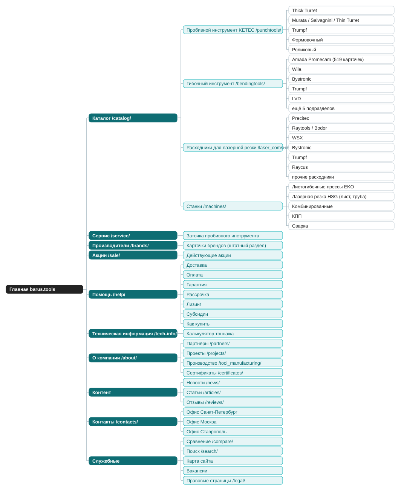

| # | Блок | Наполнение | Источник контента |
|---|---|---|---|
| 1 | Хедер | лого, телефон, почта, режим работы, «Заказать звонок», поиск, меню из 5 направлений каталога (пробивной / гибочный / лазерные расходники / станки / сервис) | брендбук, реквизиты |
| 2 | Первый экран | конкретное УТП вместо универсального слайдера: поставщик оригинального и совместимого инструмента для станков листообработки, бренды KETEC / Amada Promecam / Trumpf в подписи, кнопки «в каталог» и «оставить заявку» | новый текст |
| 3 | Плитки 5 направлений каталога | иконки по направлениям (есть в брендбуке), ссылка в раздел | брендбук + структура каталога |
| 4 | Лого-лента производителей | пробивной: KETEC; гибочный: Amada Promecam, Trumpf, Wila, Bystronic, LVD; лазер: Raycus, Raytools/Bodor, Precitec, Bystronic, WSX, Trumpf; станки: Abamet, HighPower (референсы, не бренды каталога: уточнить у заказчика перед публикацией). HSG на старом сайте есть и как страница дилерства, и как разделы станков в каталоге (лазерная резка металла и труб, карточка G3015H), включать после подтверждения заказчиком | бриф, раздел «Поставщики» старого сайта |
| 5 | Блок преимуществ | оригинал/совместимость, наличие на складе, сервис и заточка, доставка по РФ, работа с юрлицами (заявка + счёт вне сайта) | новый текст |
| 6 | Топ-категории по объёму номенклатуры | Amada Promecam (519 карточек в старом sitemap), Thick Turret (142), Murata/Salvagnini/Thin Turret (93): приоритет по факту, не по догадке | аудит старого сайта, старый sitemap |
| 7 | Вход в калькуляторы и техинформацию | калькулятор тоннажа, PDF-инструкции: отдельная веха календаря этапов, нужна точка входа с главной | /tech-info/ со старого сайта |
| 8 | Сервис | центр заточки и обслуживания пробивного инструмента, станок BARUS GRINDER PRO | /catalog/uslugi_tsentra_servisnykh_uslug/ |
| 9 | Проекты/кейсы | из старого раздела «Реализованные проекты», оформить по схеме задача-решение-результат с фото | /projects/ |
| 10 | Новости и статьи | штатный виджет шаблона (аналог блока «Статьи раздела» в демо), материал есть, требует чистки от демо-заглушек (News 1-4) и проверки дат | /news/, /articles/ |
| 11 | Форма обратной связи / заказать звонок | как в подвале демо: имя, вопрос, телефон, почта, согласие на обработку ПДн | новый текст + юридическая формулировка |
| 12 | Футер | о компании, партнёры, каталог (5 направлений), помощь (оплата, доставка, гарантия, возврат, рассрочка), обязательные юридические ссылки (политика ПДн, согласие, cookies) | старый контент + новые обязательные страницы |
Два сценария заказа (корзина с онлайн-оплатой ~30% мелочёвки, заявка «свяжите с менеджером» для юрлиц и сложных покупок) должны быть видны с главной в CTA: не только «в каталог», но и явная кнопка заявки, аналогично «Купить в 1 клик» / «Рассчитать доставку» в демо-карточке.
Блок акций на главной: на старом сайте все 8 акций архивные, регулярность механики уточняется у маркетинга. Место под блок закладываем в разметке, наполнение после подтверждения.
Полная карта в двух видах: «как есть» (реальная структура старого сайта, включая битые адреса) и «как должно быть» (архитектура нового сайта). Файлы: карта сайта с кликабельными URL и статусом каждой страницы · таблица иерархии с комментариями (xlsx, скачать).

Сокращённо, полная версия с комментариями в xlsx выше.
Главная `/`
1. Хедер · 2. Первый экран · 3. Плитки 5 направлений каталога
4. Лого-лента производителей · 5. Блок преимуществ
6. Топ-категории по номенклатуре · 7. Вход в калькуляторы
8. Сервис · 9. Проекты/кейсы · 10. Новости и статьи
11. Форма обратной связи · 12. Футер
Каталог `/catalog/`
- Пробивной инструмент KETEC `/catalog/punchtools/`
- Thick Turret, Murata/Salvagnini/Thin Turret, Trumpf, Формовочный, Роликовый
- Гибочный инструмент `/catalog/bendingtools/`
- Amada Promecam (519 карточек), Wila, Bystronic, Trumpf, LVD и ещё 5 подраздела
- Расходники для лазерной резки `/catalog/laser_comsumables/`
- Precitec, Raytools/Bodor, WSX, прочие расходники, Bystronic, Trumpf, Raycus
- Станки `/catalog/machines/`
- Листогибочные прессы EKO, лазерная резка металла/труб HSG, комбинированные, КПП, сварка
Сервис `/service/`: вынесен из каталога
Производители `/brands/`: вынесен из partners/postavshchiki/, штатный раздел шаблона
Акции `/sale/`: вынесен из about/sale/ в верхний уровень
Помощь `/help/`: Доставка, Оплата, Гарантия, Рассрочка, Лизинг, Субсидии, Как купить (всё с нуля)
Техническая информация `/tech-info/`: + калькулятор тоннажа
О компании `/about/` · Партнёры `/partners/` · Проекты `/projects/` · Производство `/tool_manufacturing/`
Новости `/news/` · Статьи `/articles/` · Отзывы `/reviews/` (с нуля) · Сертификаты `/certificates/` (с нуля)
Контакты `/contacts/`: 3 офиса (СПб, Москва, Ставрополь), у каждого свой менеджер
Сравнение товаров `/compare/` · Поиск `/search/` · Карта сайта · Вакансии
Правовые страницы `/legal/`: ПДн, согласие, cookies (готовят юристы)
Выбрасываем: 11 битых content/detail.php и другие адреса с 404 (страницы RICO и Barus by TPTooling собираем заново), smtpconfig.php, дубль projects/index2.php, демо-новости News 1-4,
служебные about/_bikipedia и about/_webinars, вебинары MashExpo 2014-2015